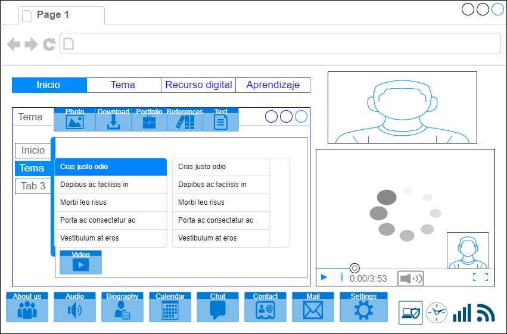

Proposito del sitio
Los elementos HTML son los bloques de construcción de una página web.
Una etiqueta indica al navegador dónde empieza y termina un elemento,
mientras que un atributo describe las características de un elemento.
los humanos con los sistemas computacionales de forma natural e intuitiva
Para si facil comunicar a interacion para Design con lengua de señas.
los bloques de construcción de una página web

González, C. J., & Rodríguez, R. V. (2017). Editor web visual para HTML, CSS y JavaScript de apoyo a la docencia.
El bloque de lista de páginas para recopilar y mostrar automáticamente una lista jerárquica de todas las páginas
publicadas de tu sitio web
Comunicar a interacion para design con lengua de señas
Hernández, C., Pulido, J. L., & Arias, J. E. (2015). Las tecnologías de la información en el aprendizaje de la lengua de señas.
Comunicar a interacion para design de sitio web con ingresar menu de accesibilidad (auditivo )para lenguaje de señas.
The photo : Diseño ingresar al Html interacion a comunicar con la persona sorda
